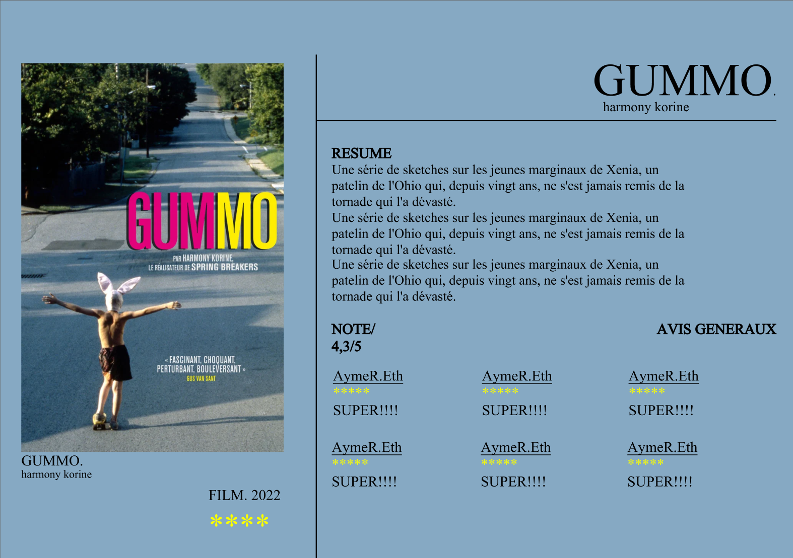

Qu'est-ce qu'un film underground ?
Les films underground sont généralement définis par leur production
indépendante, leur distribution limitée et leur contenu souvent
expérimental ou marginalisé. Ces films défient souvent les normes
conventionnelles de l'industrie cinématographique et explorent des
thèmes et des styles qui ne sont pas couramment abordés dans les
productions grand public.
Fonctionnalités de l'Application :
- Sélection Locale : L'application propose une sélection unique de films underground disponibles dans chaque ville du pays. Les utilisateurs peuvent choisir leur ville de résidence ou de visite et découvrir les films qui sont projetés localement.
- Critiques et Évaluations : Les utilisateurs peuvent consulter les critiques et les évaluations des films pour avoir un aperçu de ce à quoi s'attendre avant de réserver leurs billets. Ces critiques sont fournies par des critiques professionnels ainsi que par d'autres utilisateurs de l'application.
- Calendrier des Projections : L'application offre un calendrier complet des projections de films underground dans chaque ville, permettant aux utilisateurs de planifier leurs sorties cinéma à l'avance.
- Filtrage par Genre et Thème : Les utilisateurs peuvent affiner leur recherche en filtrant les films par genre, thème ou même par réalisateur, afin de trouver des films qui correspondent à leurs préférences cinématographiques personnelles.
- Suggestions Personnalisées : Basées sur les préférences de l'utilisateur et ses interactions passées avec l'application, des suggestions de films underground sont proposées pour aider à découvrir de nouveaux titres qui pourraient susciter un intérêt.
- Communauté et Partage : Les utilisateurs peuvent interagir avec d'autres amateurs de films underground à travers des fonctionnalités de discussion et de partage intégrées à l'application. Cela permet de créer une communauté dynamique et engagée autour de la découverte et de la discussion des films underground.
